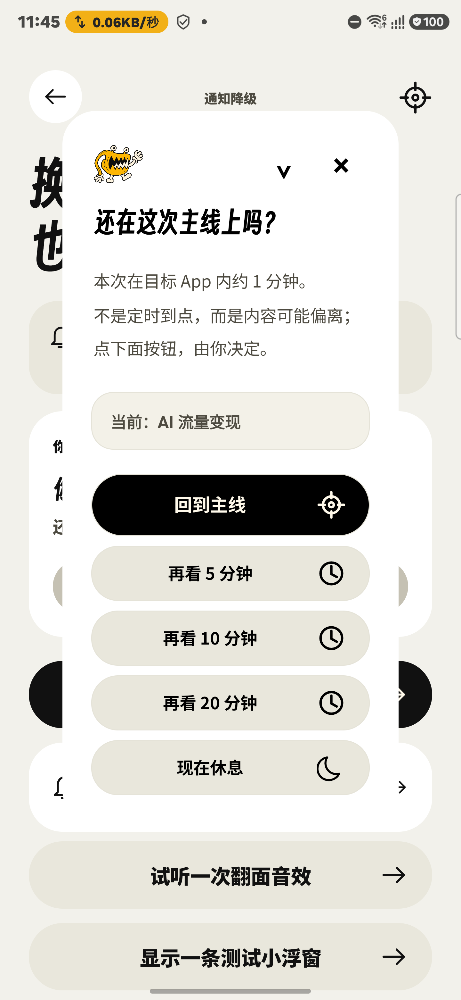

1.32.1versionName
80versionCode
64.6 MBQA 包大小
S25 过真机已验收
下载
已装旧内测包可直接覆盖安装。也可在 App 内：我的 → 许可与版本 → 检查更新（读 GitHub update.json）。
SHA-256: 1540b0eef3ff5988ed45cb310e850d40a3ec7ab4d5cf21690e6b2754ccebf954
使用说明
-
安装并开权限
允许「安装未知应用」。在系统 无障碍 里开启「你又刷了」；建议同时给 悬浮窗（我的 → 悬浮窗与通知）。下图权限页版式与 App V10 一致。
-
建一条主线
进入「今天 → 主线」，可点内置 范围库 四条模板（AI 流量变现、内容创作、学习考证、电商运营），或自己填范围。设好预计时长（时间盒）。
-
打开内容判断
我的 → 设备能力与手机操作：开启内容识别，并配置模型 API（如 DeepSeek）。不配 API 也能测浮窗与计时，但离题判断会弱。
-
刷类 App 怎么问
我的 → 主线介入 · 刷 feed：默认前 10 分钟 合并静默（抖音/小红书/视频号算同一段刷）；之后才可能问「还在这次主线上吗？」。微信聊天不算，视频号才可能。
-
推迟与休息
偏离浮窗：回到主线、再看 5 / 10 / 20 分钟、现在休息。时间盒用尽后主页会出现「时间盒用完了～」类提示，不再做内容弹窗。



建议测什么
| 项 | 预期 |
|---|---|
| 浮窗四角 | 我的 → 悬浮窗与通知 → 显示测试小浮窗：白卡四角无尖角虚影 |
| 前 10 分钟 | 抖音 + 小红书合并计时段内不打扰 |
| 离题才问 | 标题「还在这次主线上吗？」；推迟 5/10/20 |
| 微信 | 聊天不介入；视频号才可能 |
| 时间盒 | 预计分钟用尽 → 温馨收束，不再内容弹窗 |
反馈请带：机型、App、大概几分钟、弹没弹、截图、你觉得该不该弹。反馈渠道由分发人告知。